Project 5: Classification
Due: Monday 4/20, 11:00 pm
Table of Contents
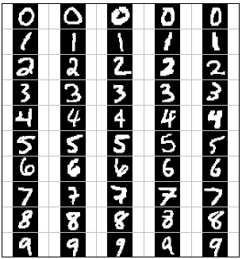 Which Digit? |
 Which action? |
Introduction
In this project, you will design two classifiers: a perceptron classifier, and a slightly modified perceptron classifier for behavioral cloning. You will test the first classifier on a set of scanned handwritten digit images, and the last on sets of recorded pacman games from various agents. Even with simple features, your classifiers will be able to do quite well on these tasks when given enough training data.
Optical character recognition (OCR) is the task of extracting text from image sources. The data set on which you will run your classifiers is a collection of handwritten numerical digits (0-9). This is a very commercially useful technology, similar to the technique used by the US post office to route mail by zip codes. There are systems that can perform with over 99% classification accuracy (see LeNet-5 for an example system in action).
Behavioral cloning is the task of learning to copy a behavior simply by observing examples of that behavior. In this project, you will be using this idea to mimic various pacman agents by using recorded games as training examples. Your agent will then run the classifier at each action in order to try and determine which action would be taken by the observed agent.
The code for this project includes the following files and data, available as a zip file.
| Data file | |
data.zip |
Data file, including the digit and face data. |
| Files you will edit | |
perceptron_pacman.py |
The location where you will write your behavioral cloning perceptron classifier. |
perceptron.py |
The location where you will write your perceptron classifier. |
dataClassifier.py |
The wrapper code that will call your classifiers. You will also write your enhanced feature extractor here. You will also use this code to analyze the behavior of your classifier. |
answers.py |
Answer to Question 2 goes here. |
| Files you should read but NOT edit | |
classificationMethod.py |
Abstract super class for the classifiers you will write. (You should read this file carefully to see how the infrastructure is set up.) |
samples.py |
I/O code to read in the classification data. |
util.py |
Code defining some useful tools. You may be familiar with some of these by now, and they will save you a lot of time. |
mostFrequent.py |
A simple baseline classifier that just labels every instance as the most frequent class. |
perceptron.py, answers.py, perceptron_pacman.py, and dataClassifier.py (only) during the assignment. Please do not change the other files in this distribution or submit any of our original files other than this file.
Evaluation: Your code will be autograded for technical correctness. Please do not change the names of any provided functions or classes within the code, or you will wreak havoc on the autograder. However, the correctness of your implementation -- not the autograder's judgements -- will be the final judge of your score. If necessary, we will review and grade assignments individually to ensure that you receive due credit for your work.
Academic Dishonesty: We will be checking your code against other submissions in the class for logical redundancy. If you copy someone else's code and submit it with minor changes, we will know. These cheat detectors are quite hard to fool, so please don't try. We trust you all to submit your own work only; please don't let us down. If you do, we will pursue the strongest consequences available to us.
Getting Help: You are not alone! If you find yourself stuck on something, contact the course staff for help. Office hours, section, and the discussion forum are there for your support; please use them. If you can't make our office hours, let us know and we will schedule more. We want these projects to be rewarding and instructional, not frustrating and demoralizing. But, we don't know when or how to help unless you ask.
Discussion: Please be careful not to post spoilers.
Question 1 (4 points): Perceptron
A skeleton implementation of a perceptron classifier is provided for you in perceptron.py. In this part, you will fill in the train function.
Unlike the naive Bayes classifier, a perceptron does not use probabilities to make its decisions. Instead, it keeps a weight vector of each class ( is an identifier, not an exponent). Given a feature list , the perceptron compute the class whose weight vector is most similar to the input vector . Formally, given a feature vector (in our case, a map from pixel locations to indicators of whether they are on), we score each class with:
Then we choose the class with highest score as the predicted label for that data instance. In the code, we will represent as a Counter.
Learning weights
In the basic multi-class perceptron, we scan over the data, one instance at a time. When we come to an instance , we find the label with highest score:
We compare to the true label . If , we've gotten the instance correct, and we do nothing. Otherwise, we guessed but we should have guessed . That means that should have scored higher, and should have scored lower, in order to prevent this error in the future. We update these two weight vectors accordingly:
Using the addition, subtraction, and multiplication functionality of the Counter class in util.py, the perceptron updates should be relatively easy to code. Certain implementation issues have been taken care of
for you in perceptron.py, such as handling iterations over the training data and ordering the update trials. Furthermore, the code sets up the weights data structure for you. Each legal label needs its own
Counter full of weights.
Question
Fill in the train method in perceptron.py. Run your code with:
python dataClassifier.py -c perceptron
Hints and observations:
- Note that classify() takes a list of exemplars as input. So if you want to classify a single example, you must call classify([f]), not classify(f). Note that it also returns the classifications as a list, even if there is only one entry.
- The command above should yield validation accuracies in the range between 40% to 70% and test accuracy between 40% and 70% (with the default 3 iterations). These ranges are wide because the perceptron is a lot more sensitive to the specific choice of tie-breaking than naive Bayes.
- One of the problems with the perceptron is that its performance is sensitive to several practical details, such as how many iterations you train it for, and the order you use for the training examples (in practice, using a randomized
order works better than a fixed order). The current code uses a default value of 3 training iterations. You can change the number of iterations for the perceptron with the
-i iterationsoption. Try different numbers of iterations and see how it influences the performance. In practice, you would use the performance on the validation set to figure out when to stop training, but you don't need to implement this stopping criterion for this assignment.
Question 2 (1 point): Perceptron Analysis
Visualizing weights
Perceptron classifiers, and other discriminative methods, are often criticized because the parameters they learn are hard to interpret. To see a demonstration of this issue, we can write a function to find features that are characteristic of one class. (Note that, because of the way perceptrons are trained, it is not as crucial to find odds ratios.)
Question
Fill in findHighWeightFeatures(self, label) in perceptron.py. It should return a list of the 100 features with highest weight for that label. You can display the 100 pixels with the largest weights using the
command:
python dataClassifier.py -c perceptron -w
Use this command to look at the weights, and answer the following question. Which of the following sequence of weights is most representative of the perceptron?
| (a) | 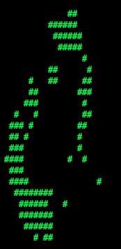 |
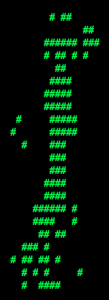 |
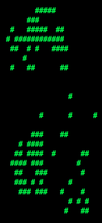 |
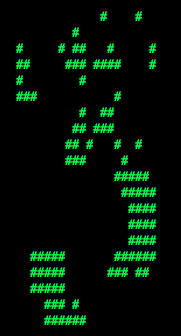 |
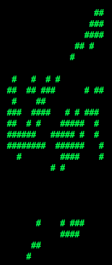 |
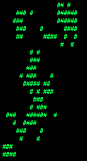 |
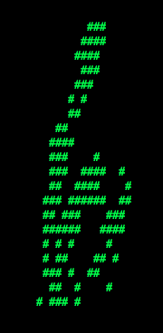 |
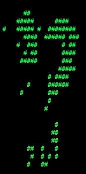 |
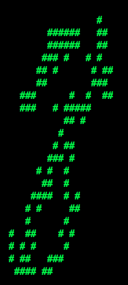 |
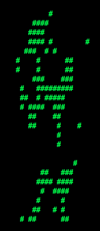 |
| (b) | 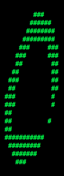 |
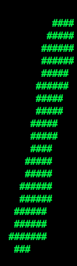 |
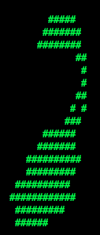 |
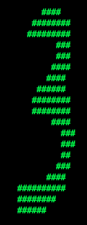 |
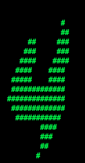 |
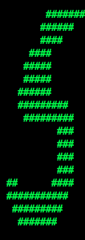 |
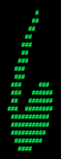 |
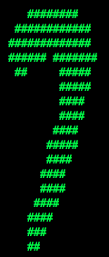 |
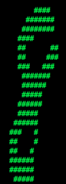 |
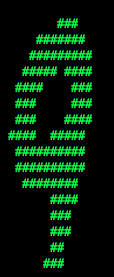 |
Answer the question answers.py in the method q2, returning either 'a' or 'b'.
Question 3 (6 points): Digit Feature Design
Building classifiers is only a small part of getting a good system working for a task. Indeed, the main difference between a good classification system and a bad one is usually not the classifier itself (e.g. perceptron vs. naive Bayes), but rather the quality of the features used. So far, we have used the simplest possible features: the identity of each pixel (being on/off).
To increase your classifier's accuracy further, you will need to extract more useful features from the data. The EnhancedFeatureExtractorDigit in dataClassifier.py is your new playground. When analyzing your
classifiers' results, you should look at some of your errors and look for characteristics of the input that would give the classifier useful information about the label. You can add code to the analysis function in
dataClassifier.py to inspect what your classifier is doing. For instance in the digit data, consider the number of separate, connected regions of white pixels, which varies by digit type. 1, 2, 3, 5, 7 tend to have one
contiguous region of white space while the loops in 6, 8, 9 create more. The number of white regions in a 4 depends on the writer. This is an example of a feature that is not directly available to the classifier from the per-pixel
information. If your feature extractor adds new features that encode these properties, the classifier will be able exploit them. Note that some features may require non-trivial computation to extract, so write efficient and correct code.
Note: You will be working with digits, so make sure you are using DIGIT_DATUM_WIDTH and DIGIT_DATUM_HEIGHT, instead of FACE_DATUM_WIDTH and FACE_DATUM_HEIGHT.
Question
Add new binary features for the digit dataset in the EnhancedFeatureExtractorDigit function. Note that you can encode a feature which takes 3 values [1,2,3] by using 3 binary features, of which only one is on at the time, to
indicate which of the three possibilities you have. In theory, features aren't conditionally independent as naive Bayes requires, but your classifier can still work well in practice. We will test your classifier with the following
command:
python dataClassifier.py -d digits -c naiveBayes -f -a -t 1000
With the basic features (without the -f option), your optimal choice of smoothing parameter should yield 82% on the validation set with a test performance of 78%. You will receive 3 points for implementing new feature(s)
which yield any improvement at all. You will receive 3 additional points if your new feature(s) give you a test performance greater than or equal to 84% with the above command.
Question 4 (4 points): Behavioral Cloning
You have built a perceptron classifier. You will now use a modified version of perceptron in order to learn from pacman agents. In this question, you will fill in the classify and train
methods in perceptron_pacman.py. This code should be similar to the methods you've written in perceptron.py.
For this application of classifiers, the data will be states, and the labels for a state will be all legal actions possible from that state. Unlike perceptron for digits, all of the labels share a single weight vector w, and the features extracted are a function of both the state and possible label.
For each action, calculate the score as follows:
Then the classifier assigns whichever label receives the highest score:
Training updates occur in much the same way that they do for the standard classifiers. Instead of modifying two separate weight vectors on each update, the weights for the actual and predicted labels, both updates occur on the shared weights as follows:
# Correct action
# Guessed action
Question
Fill in the train method in perceptron_pacman.py. Run your code with:
python dataClassifier.py -c perceptron -d pacman
This command should yield validation and test accuracy of over 70%.
Question 5 (4 points): Pacman Feature Design
In this part you will write your own features in order to allow the classifier agent to clone the behavior of observed agents. We have provided several agents for you to try to copy behavior from:
- StopAgent: An agent that only stops
- FoodAgent: An agent that only aims to eat the food, not caring about anything else in the environment.
- SuicideAgent: An agent that only moves towards the closest ghost, regardless of whether it is scared or not scared.
- ContestAgent: A staff agent from p2 that smartly avoids ghosts, eats power capsules and food.
We've placed files containing multiple recorded games for each agent in the data/pacmandata directory. Each agent has 15 games recorded and saved for training data, and 10 games for both validation and testing.
Question
Add new features for behavioral cloning in the EnhancedPacmanFeatures function in dataClassifier.py.
Upon completing your features, you should get at least 90% accuracy on the ContestAgent, and 80% on each of the other 3 provided agents. You can directly test this using the --agentToClone <Agent name>, -g <Agent
name> option for dataClassifier.py:
python dataClassifier.py -c perceptron -d pacman -f -g ContestAgent -t 1000 -s 1000
Other helpful options:
We have also provided a new ClassifierAgent, in pacmanAgents.py, for you that uses your implementation of perceptron_pacman. This agent takes in training, and optionally validation, data and performs the training step of the classifier upon initialization. Then each time it makes an action it runs the trained classifier on the state and performs the returned action. You can run this agent with the following command:
python pacman.py -p ClassifierAgent --agentArgs trainingData=<path to training data>
You can also use the --agentToClone <Agent Name> option to use one of the four agents specified above to train on:
python pacman.py -p ClassifierAgent --agentArgs agentToClone=<Agent Name>
Congratulations! You're finished with all the CS 343 projects.